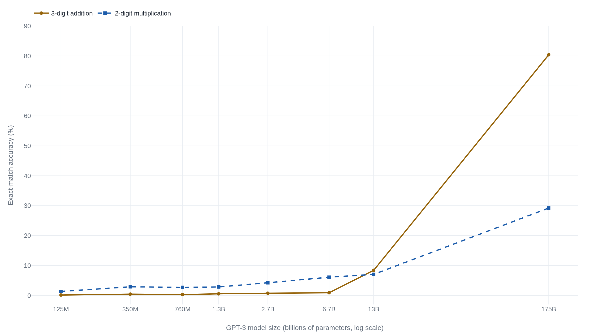
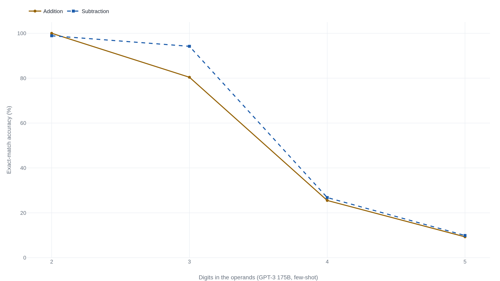

GPT-3's arithmetic cliff is mostly a property of exact match, not of scale
Score the same GPT-3 answers digit by digit and the sharp jump becomes a smooth, predictable climb, which turns the mirage debate toward a harder problem no metric has solved: predicting the next ability before its model is trained.
Emergent Abilities of Large Language Models
Read the paperThis paper instead discusses an unpredictable phenomenon that we refer to as emergent abilities of large language models… emergent abilities cannot be predicted simply by extrapolating the performance of smaller models.1
The question scale was supposed to answer
By 2022 the field had a reliable way to buy lower loss: add parameters, add data, add compute, and the perplexity falls along a smooth power law. The open question was whether that smooth descent ever purchased something discontinuous, a capability a smaller model simply does not have and a larger one does. Wei and colleagues answered yes and gave the effect a name. An ability is emergent, they wrote, if it is “not present in smaller models but is present in larger models,” appearing as a “phase transition—a dramatic change in overall behavior that would not have been foreseen by examining smaller-scale systems.”1 The claim in the abstract is sharper than the wording sounds: such abilities “cannot be predicted simply by extrapolating the performance of smaller models.”1
A year later Schaeffer, Miranda, and Koyejo answered the same question the other way. Their reply, Are Emergent Abilities of Large Language Models a Mirage?, took the emergence paper's own lead example and argued that the jump was “created by the researcher's chosen metrics, not unpredictable changes in model behavior.”2 The two papers agree on every measurement and part company only over what those measurements mean. One reads GPT-3's sudden competence as a change inside the model; the other, as a threshold built into the yardstick that scores it. What they contest is the shape the numbers make, and whether that shape could have been called before the larger model was trained.
Rebuilding the jump on GPT-3 arithmetic
The emergence paper leads with integer arithmetic: three-digit addition and subtraction, two-digit multiplication, scored under few-shot prompting. On that task, it reports, GPT-3 has “close-to-zero performance for several orders of magnitude of training compute, before performance jumps to sharply above random at 2·1022 training FLOPs (13B parameters).”1 That figure runs GPT-3 on the arithmetic task from the BIG-Bench collaboration. The identical operations were measured earlier, on OpenAI's own synthetic problems, in the GPT-3 paper itself, whose Appendix Table H.1 records few-shot exact-match accuracy for all eight model sizes.3 Those numbers are a slightly different set from Wei's, but the same operations on the same model family, and they let the curve be redrawn from primary data rather than reproduced from a figure.
Three-digit addition stays under one percent across six model sizes, from 125 million parameters to 6.7 billion. It reaches 8.4 percent at 13 billion, then 80.4 percent at 175 billion.3 Plotted against model size, that is the emergence claim in one line: a flat floor for two orders of magnitude, then a near-vertical rise. Two- digit multiplication, the harder operation, climbs more gently and reaches only 29.2 percent even at the largest size, a useful reminder that not every arithmetic task clears the threshold at once.

What exact match does to a smoothly improving quantity
The mirage paper's argument starts one level below the curve, at the quantity a language model actually improves: the probability it assigns to the next correct token. Cross-entropy loss falls as a power law in scale, so that per-token probability rises smoothly and without a kink. Call it p, the chance the model emits any one required digit correctly. Exact-match accuracy asks for something stricter. A three-digit sum has a multi-digit answer, and the answer is scored right only if every digit is right. If the digits were independent, the score would be the product of the per-token probabilities.
- p_Nper-token accuracy at scale N, which rises smoothly as loss falls.
- Lthe number of tokens the answer requires, all of which must be correct.
Raising a number below one to a power greater than one is a discouraging operation. A per-token accuracy of 0.9 that would earn a 90 on a single digit earns 0.94, about 66 percent, on a four-token answer, and a per-token 0.5 collapses to about 6 percent. So as p glides upward with scale, the exact-match score built on it stays pinned near zero until p is quite high, then rises steeply once it clears that range. The same paper writes the smooth counterpart directly. Token edit distance, the count of single-digit edits between the model's answer and the target, scales as L\,(1 - p_N), and so it “reveals smooth, continuous, predictable changes in model performance.”2 One set of outputs, two yardsticks: the exact-match score bends into a cliff, and token edit distance draws a ramp.
Hold the model fixed and lengthen the answer
If the cliff comes from the exponent L rather than from anything happening inside the model, it should be visible with scale held constant. Table H.1 supplies exactly that test. Fix GPT-3 at 175 billion parameters, change nothing about the model, and lengthen the answer. Addition accuracy runs 100.0 percent for two-digit problems, 80.4 for three-digit, 25.5 for four-digit, and 9.3 for five-digit; subtraction traces the same descent, from 98.9 down to 9.9.3

Scale cannot explain the fall, because scale is fixed. Only the length of the answer changes, and accuracy drops in almost exactly the geometric pattern the exponent predicts, which is why Schaeffer et al. report that “accuracy falls approximately geometrically with the length of the target string.”2 The same paper adds a second observation that the cliff picture hides: smaller models do not score a true zero on these tasks. With extra test data to raise the resolution, every model in the GPT-3 family posts above-chance accuracy, and the per-digit skill improves steadily well below the apparent threshold. An independent explainer from Georgetown's security-and-technology center puts the result plainly: researchers “devised smooth metrics that did give partial credit” and “found there were no sudden changes with these metrics.” The reason they give is that “the model's ability to predict each individual digit increased smoothly.”4
How far the two papers actually disagree
Set the two results side by side and the facts line up. The larger model really is better at arithmetic, the per-digit skill really does climb smoothly, and exact-match accuracy really does jump. What the mirage paper adds is that the jump is manufactured by the scoring rule, not a change in the underlying skill; the field endorsed the critique with one of two Outstanding Paper awards at NeurIPS 20235. It is careful about how far that goes. In the discussion the authors write that “nothing in this paper should be interpreted as claiming that large language models cannot display emergent abilities,” only that the specific abilities previously called emergent “might likely be a mirage induced by researcher analyses.”2 Their meta-analysis quantifies the reach: of 39 preferred metrics in BIG-Bench, at most 5 show emergence, and two of them, Multiple Choice Grade and Exact String Match, account for more than 92 percent of the claimed cases.2 Both are discontinuous or nonlinear in exactly the way the arithmetic example is.
The metric objection was not purely external, either. BIG-Bench's own authors, whose tasks Wei drew on, had already reported before the mirage paper that tasks showing “breakthrough behavior at a critical scale often involve multiple steps or components, or brittle metrics.”6 The scoring rule was on the table from the start. Where Wei holds his ground, in a later reply to the critique, is on universality. He grants that “some tasks that appear emergent under exact match have smoothly improving performance under another metric.” This does not rebut emergence, he argues, “since metrics like exact match are what we ultimately want to optimize for many tasks.” And some tasks keep a discontinuity even under a smooth surrogate: for IPA transliteration “there is still a large kink in cross-entropy loss that breaks the trend and is hard to predict.”7 That the lead author of the emergence paper is writing the rebuttal is worth stating: this is the emergence camp defending its own claim, not an outside referee. But that crux has an independent answer the rebuttal does not. Working the loss angle rather than the metric one, Du and colleagues report that a model “exhibits emergent abilities on certain tasks—regardless of the continuity of metrics—when its pre-training loss falls below a specific threshold.”8 That is a peer-reviewed result from authors with no stake in either paper, and it holds that a discontinuity can survive a continuous view, the very thing Wei’s example asserts and his critics doubt.
The two-camp picture is itself too small. A third position holds that emergence is real for reasons unrelated to metrics. The mirage authors note two such accounts. Caballero and colleagues explain the jumps with a piecewise power law, under which “emergent abilities are real, caused by a change in the governing power law.” Michaud and colleagues derive them instead from strong assumptions about the data.2 A fourth position, from Lu and colleagues, deflates emergence along a different axis. Across more than a thousand experiments they conclude that purported emergent abilities “are not truly emergent, but result from a combination of in-context learning, model memory, and linguistic knowledge.” That account is incompatible with the metric-only story.9 And the phenomenon Wei most cared about was never only arithmetic. Chain-of-thought prompting, where a model shows its intermediate steps, “only surpasses standard prompting” once scaled to roughly 100 billion parameters, and its authors describe reasoning that “emerge[s] naturally in sufficiently large language models.”10 Whether that arrival, too, is a scoring artifact is a separate question the arithmetic reconstruction does not settle.
The three questions the arithmetic curve splits into
The dispute is narrower than the headlines that carried it, and it resolves into three findings that do not compete. First, on the metrics practitioners actually optimize, some abilities do arrive abruptly. A system that must return an entire correct answer is graded by exact match, and under exact match GPT-3's three-digit addition goes from unusable to usable across a single doubling of scale.3 Wei's point stands that this cliff is the quantity a product often cares about.7
Second, the shape of that arrival was a property of the yardstick. Held at fixed scale, exact-match accuracy collapses geometrically as the answer lengthens, while the same outputs scored by token edit distance climb smoothly. The discontinuity and its unpredictability were read into the data by the choice of metric.2 The right correction is not to declare the capability illusory. It is to stop inferring a change in the model from a cliff that the scoring rule would have produced anyway.
Third, the question both sides agree matters is still open. A smooth metric explains a jump after the fact. It has not yet predicted one in advance. The Georgetown explainer names the residual precisely. A “significant unresolved question is whether performance can be predicted in advance, rather than only for models at scales that have already been tested.” Doing that decomposition ahead of time, it adds, “is challenging.”4 Choosing the surrogate that would have stayed smooth requires knowing which ability to watch, which is most of the forecasting problem.
The emergence paper measured a real jump. The mirage paper correctly diagnosed its shape as an artifact of exact match. Neither reading cancels the other. What survives is that capability on the metrics we deploy can turn on sharply with scale. What was measurement rather than model is the discontinuity and its air of unpredictability. What stays genuinely open, conceded on both sides, is prediction before the fact, which no continuous metric has yet delivered.4
Sources
- arXiv · Wei et al., "Emergent Abilities of Large Language Models" (TMLR, 2022)
- arXiv · Schaeffer, Miranda, Koyejo, "Are Emergent Abilities of Large Language Models a Mirage?" (NeurIPS, 2023)
- arXiv · Brown et al., "Language Models are Few-Shot Learners" (GPT-3, NeurIPS 2020)
- CSET, Georgetown · "Emergent Abilities in Large Language Models: An Explainer"
- NeurIPS · "Announcing the NeurIPS 2023 Paper Awards" (Outstanding Main Track Papers)
- arXiv · Srivastava et al., "Beyond the Imitation Game" (BIG-Bench, TMLR 2022)
- Jason Wei · "Common arguments regarding emergent abilities" (lead author of Source 1)
- arXiv · Du et al., "Understanding Emergent Abilities of Language Models from the Loss Perspective" (NeurIPS 2024)
- ACL · Lu et al., "Are Emergent Abilities in Large Language Models just In-Context Learning?" (2024)
- arXiv · Wei et al., "Chain-of-Thought Prompting Elicits Reasoning in Large Language Models" (NeurIPS 2022)